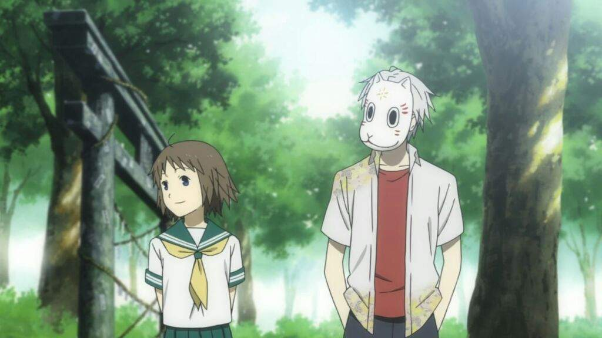
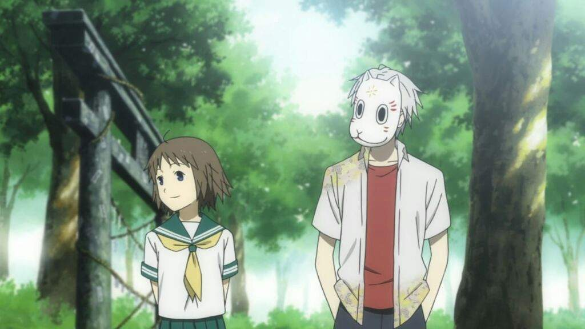

Gin
is the male protagonist in Hotarubi no Mori e Movie, alongside with Hotaru Takegawa. He is voiced by Koki Uchiyama.
About Gin :
Appearance
possesses green eyes, pale skin & silver hair. Initially, he covers his face with a traditional Japanese yokai mask. However, he becomes comfortable in taking it off when Hotaru is present. As Hotaru grows, Gin's appearance remained almost the same because he ages a quarter slower than a normal human
Personality
has a very naïve personality, mostly because he never had any kind of relationship besides with the forest spirits and Hotaru. He usually has a calm demeanor, and is also sweet and kind, especially as he warms up to Hotaru over the years of knowing her.
Plot
At the beginning, Gin was abandoned by his parents and left in the Spirit Forest, where the other spirits took him in and gave him the mask he wears to this day. Since then, Gin lived in solitary with only his fellow spirits as his company- that is, until Hotaru came and got lost in the forest. After meeting Hotaru, Gin looked forward to every day in the summer as he would spend time with his new found friend.
Meeting with Hotaru
Little Hotaru is lost in the forest during the summer when visiting her Uncle's home. Alone and frightened, she cries, attracting Gin's attention. Gin helped Hotaru out of the forest to search for her Uncle's house.
Waiting for Summer
Hotaru can only meet Gin during the summer, when she stays at her Uncle's house. During the other seasons, Hotaru has to move back to her original home away from the forest. Gin waits for summer to come as well as Hotaru, as it is the only time the two can be together. Hotaru always comes back to the forest every summer to visit Gin without fail. Their bond grow stronger and they grow closer with each passing summer.
A Precious Hug
takes Hotaru to the Yokai Festival of Spirits where they are walking together when a human boy who snuck into the festival rushes by. He trips and nearly falls. Gin catches him by his arm and prevents the fall. In the process Gin touches the boy. The magic which preserves Gin's body is obliterated due to the contact and Gin starts to disintegrate into glowing shards. Knowing that he has mere minutes to live, Gin calls Hotaru to him. Hotaru rushes into his arms, getting the chance to finally touch him. They embrace briefly, both just happy to be in each others' arms. Until Gin dissolves into light particles and Hotaru is left hugging the yukata that he was wearing as she falls to the ground, crying. Gin admits his love for Hotaru and she admits that she loves him too. A Yokai that knew Gin thanked her because she gave Gin happiness and fulfilled his wish, which was to touch a human. Hotaru keeps his mask which serves as a reminder of Gin's existence, and kissed it.
Abilities
is somewhat of a ghost, he isn't exactly human or a spirit. Due to the Mountain God's spell, Gin ages four times slower than a normal human.
Gallery
Here are some iconic pictue:
 
